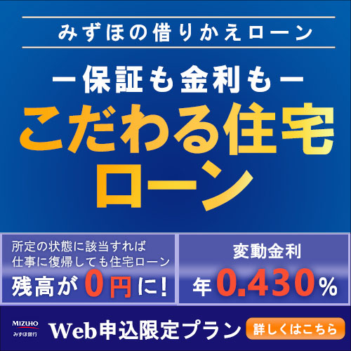
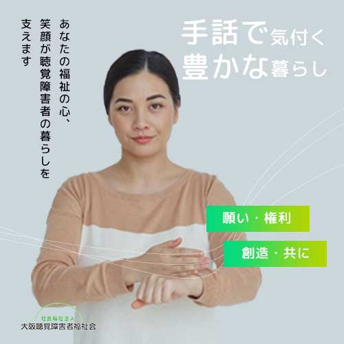
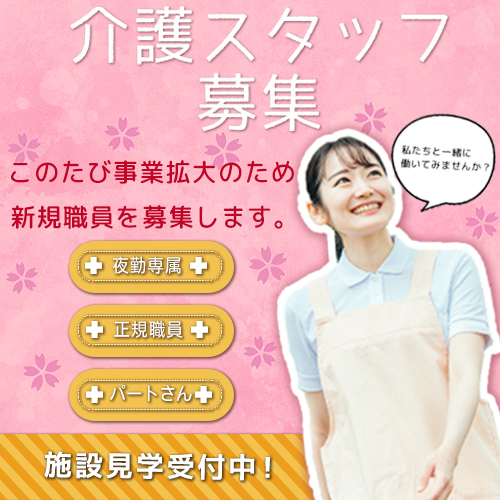
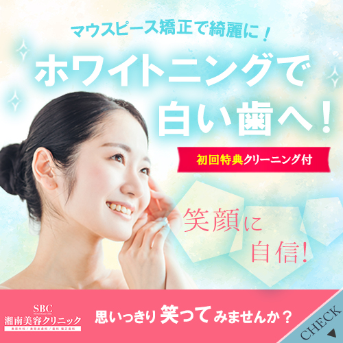

MASAHIRO
PORTFOLIO
Plofile
自己PR
私は、自分の制作物で共感や感動をしてもらうのが目標です。
webデザインの実務経験はないのですが、まずは業務を早く
覚 え貢献していきたいです。最終的にはデザインのディレク
ション や改善をするアートディレクターになっていきたいで
す。 「この人に依頼してよかった」と思われるような人材に
成長する べくデザインやコーディングについて日々勉強して
おります。 コツコツと進める作業を丁寧に行う事が得意です。
地道な努力を出来る所が長所です。
私は、自分の制作物で共感や感動をしてもらうのが目標です。
webデザインの実務経験はないのですが、まずは業務を早く
覚 え貢献していきたいです。最終的にはデザインのディレク
ション や改善をするアートディレクターになっていきたいで
す。 「この人に依頼してよかった」と思われるような人材に
成長する べくデザインやコーディングについて日々勉強して
おります。 コツコツと進める作業を丁寧に行う事が得意です。
地道な努力を出来る所が長所です。
有資格
Webクリエーター能力検定スタンダード(HTML5)
Photoshopクリエーター能力検定試験スタンダード
illustratorクリエーター能力検定試験スタンダード
Webクリエーター能力検定スタンダード(HTML5)
Photoshopクリエーター能力検定試験スタンダード
illustratorクリエーター能力検定試験スタンダード
～テーマを決め、一からデザインをした作品群～
バナーデザイン関係

- 

- 
- 
- 
三都住設
バナーデザイン担当
キャラクターを配置することで、
可愛いデザインに仕上げました。
可愛いデザインに仕上げました。
ハワイ旅行
バナーデザイン担当
「女子旅」をテーマに可愛いモチ
ーフを並べてデザインしました。
ーフを並べてデザインしました。
Skill
photoshop
実務で使用経験あり。
デザインの業務で操作して使用できるレベル。
デザインの業務で操作して使用できるレベル。
Excel
実務で使用経験あり。
簡単な関数を調べて使用できるレベル。
簡単な関数を調べて使用できるレベル。
Illustrator
実務で使用経験あり。
デザインの業務で操作して使用できるレベル。
デザインの業務で操作して使用できるレベル。
Word
実務で使用経験あり。
簡単なグラフを使用して報告書をまとめる事が出来るレベル。
簡単なグラフを使用して報告書をまとめる事が出来るレベル。
Premiere Pro
実務経験あり。バイトさんの作業工程の簡易動画を作成。
動画のカット、テロップ入れ、色調調整等基本操作が出来るレベル。
Slack
実務で使用経験あり。
社内の連絡手段として使用していたレベル。
社内の連絡手段として使用していたレベル。
cubase
作詞作曲し、ギターライン録音、MIDI録音が可能。録音したものをミックスする事が出来るレベル。
Visual Studio Code
実務で使用経験あり。
社内社外のホームページの文字の修正、画像の差し替えボタンリンクの設置をしたレベル。
社内社外のホームページの文字の修正、画像の差し替えボタンリンクの設置をしたレベル。
filezilla
実務経験あり。
会社ホームページの修正時に使用したレベル。
会社ホームページの修正時に使用したレベル。
CLIP STUDIO PAINT
デジタルイラストを描くのに使用。
基本操作ができるレベル。
基本操作ができるレベル。